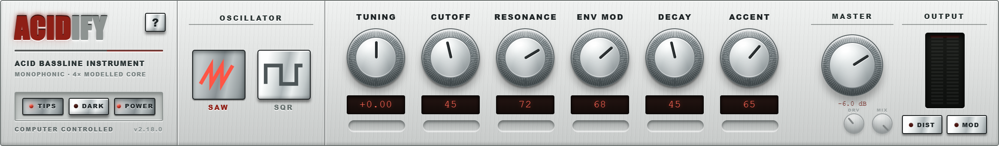
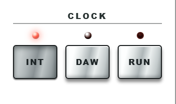
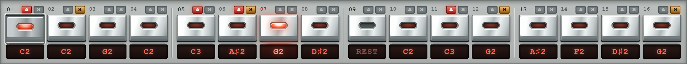
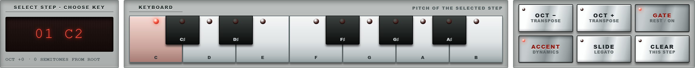
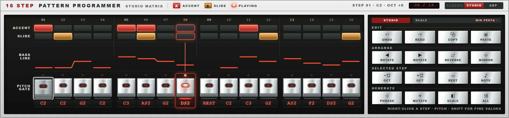
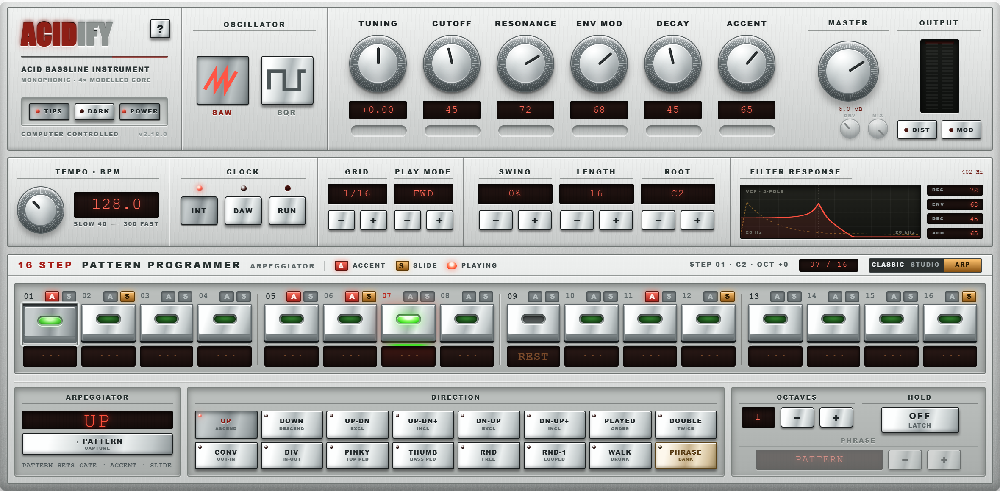
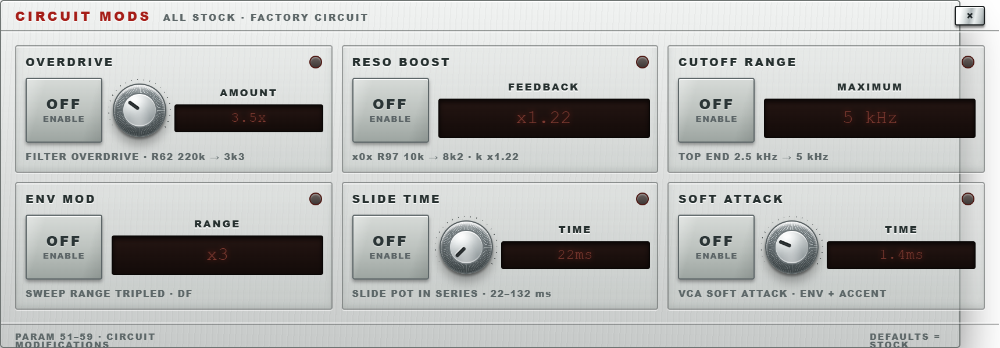
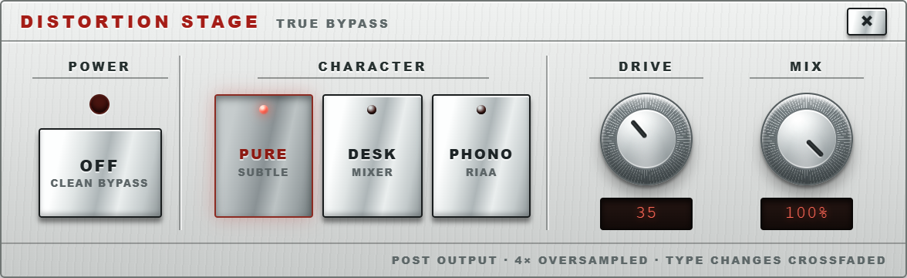

16 STEP PATTERN PROGRAMMER with three editors: CLASSIC, STUDIO, ARP
The three editor tabs at the top right of the programmer (CLASSIC / STUDIO / ARP) switch the bottom section. Click the tab you want, or press M to cycle. Everything else on the panel stays the same in all three views.
ACIDIFY · USER MANUAL3
ACIDIFY · USER MANUAL02 · SOUND CONTROLS
02SOUND CONTROLS

1234567891011
CONTROL
FUNCTION
1SAW / SQR
Selects the oscillator waveform, sawtooth or square. Same two flavors as the original unit.
2TUNING
Master tune, ±1 semitone around center.
3CUTOFF
Filter cutoff. This sets the resting point of the filter. Notes still open the filter above it when ENV MOD is up (see below).
4RESONANCE
Filter resonance. Full clockwise sits just under self-oscillation, like a stock unit.
5ENV MOD
How much the filter envelope pushes the cutoff up on each note. Important: more ENV MOD also pulls the resting cutoff down between notes. That is original 303 circuit behavior, not a bug. If you want to hear the filter fully closed, turn ENV MOD down as well as CUTOFF.
6DECAY
Filter envelope decay time, 200 ms to 2.5 s. On accented steps the decay is always fixed at the short 200 ms setting, exactly like the hardware.
7ACCENT
How hard accented steps hit: louder through the VCA and an extra resonance-dependent filter sweep. At high RESONANCE the accent sweep gets faster and more aggressive.
8MASTER
Output volume, −36 to +6 dB. Sits after the distortion stage, so it never changes the distortion character.
9DRV / MIX minis
Direct access to the distortion Drive and Mix without opening the overlay.
10OUTPUT meter
Peak meter with clip latch. If the red clip indicator lights, click it to reset.
11DIST / MOD buttons
Open the Distortion and Circuit Mods overlays (sections 8 and 9).
The FILTER RESPONSE display in the middle strip shows the current filter curve plus live readouts of RES, ENV, DEC and ACC.
ACIDIFY · USER MANUAL4
ACIDIFY · USER MANUAL03 · CLOCK AND TRANSPORT
03CLOCK AND TRANSPORT

CLOCK
INT MODE
The internal clock runs the sequencer. Set the tempo with the TEMPO knob (mouse wheel = 0.1 BPM steps, hold Shift for 0.01) and start/stop with RUN.
DAW MODE
DAW TRANSPORT
In DAW mode the sequencer starts and stops with your DAW's transport. Press play in the DAW to make ACIDIFY play. The RUN button switches to FOLLOW and the tempo knob mirrors the host tempo; both are read-only while the host is in control.
Notes on DAW mode:
In FWD play mode the pattern locks to the DAW's song position: bar 1 beat 1 is step 1, and jumping the playhead in the DAW jumps the pattern with it. The other play modes (REV, pendulum, INVERT, RND) advance one step per grid tick instead, since they have no fixed song-position mapping.
If the host does not deliver transport information at all, RUN and TEMPO keep working as a manual fallback so the instrument is never dead.
Switching back to INT keeps the last host tempo as the new internal tempo.
Step order: FWD, REV, FWD&REV (pendulum), INVERT (outside-in), RND (random, never the same step twice in a row)
3SWING
0–100 %. Delays every second step; at 100 % the pair splits 2/3 + 1/3 (full triplet feel). Works in INT and DAW mode.
4LENGTH
Pattern length, 1–16 steps. Steps beyond the length are shown disabled.
5ROOT
Root note of the pattern (C1–C4). All step pitches are relative to this.
ACIDIFY · USER MANUAL6
ACIDIFY · USER MANUAL04 · MIDI INPUT
04MIDI INPUT: WHAT PLAYS WHEN
This is the part that confuses everyone once, so here is the whole rule set:
SITUATION
WHAT MIDI NOTES DO
Sequencer stopped (RUN off, or DAW transport stopped)
MIDI notes play directly, like a mono synth. Velocity 100 or higher triggers an accent. Playing legato (new note while holding the old one) slides between the notes.
Sequencer running, CLASSIC or STUDIO editor
MIDI notes are ignored. The 16-step pattern is the only note source, exactly like the original 303. Program the pattern instead of playing it.
Sequencer running, ARP editor
MIDI notes feed the arpeggiator: hold a chord and the arp plays it. The pattern still provides the rhythm: its gates, accents and slides act as a step mask, only the pitches come from your chord.
Any time
MIDI CC 120 / CC 123 = all notes off.
NO SOUND ON MIDI?
So: if you send ACIDIFY notes and hear nothing, check whether the sequencer is running while you are in CLASSIC or STUDIO. Either stop the transport to play live, or switch to ARP to play into the running sequence.
ACIDIFY · USER MANUAL7
ACIDIFY · USER MANUAL05 · CLASSIC EDITOR
05PROGRAMMING PATTERNS: CLASSIC EDITOR

213
The step row is always visible. Each of the 16 steps has:
1
a gate button (lit = the step plays, dark = rest),
2
an A pill (accent) and an S pill (slide) directly above it,
3
a pitch readout below it.
Direct actions on a step:
ACTION
RESULT
Click
Select the step for editing
Double-click
Toggle the gate (note/rest)
Mouse wheel
Change pitch in semitones
Right-click
Note picker menu
Click A / S pill
Toggle accent / slide for that step
ACIDIFY · USER MANUAL8
ACIDIFY · USER MANUAL05 · CLASSIC EDITOR
CONTINUED

123456
The editor below shows the selected step. Use the 1KEYBOARD to set its pitch, and the buttons on the right:
BUTTON
FUNCTION
2OCT − / OCT +
Transpose the selected step one octave down/up
3GATE
Toggle note/rest
4ACCENT
Toggle accent (louder + filter bite)
5SLIDE
Ties this step to the next: the note holds through the step and glides into the next pitch. This is the classic 303 slide.
6CLEAR
Reset the step
Slide behavior detail: a slide on step N makes step N run at full length and glide into step N+1. Without slide, each note plays half the step length, then releases.
ACIDIFY · USER MANUAL9
ACIDIFY · USER MANUAL06 · STUDIO EDITOR
06STUDIO EDITOR

1234567
The same pattern as a matrix, for fast editing:
1
ACCENT / SLIDE lanes – click cells to toggle. Drag to paint several steps in one stroke.
2
BASS LINE lane – the pitch contour. Mouse wheel on a cell changes its pitch; right-click opens the note picker.
3
PITCH GATE lane – gates plus pitch readouts, same interactions as the classic step row.
Multi-select: drag across cells, then use the tool panel on the right:
GROUP
TOOLS
4EDIT
UNDO, REDO, COPY, PASTE (keyboard shortcuts work too)
5ARRANGE
ROTATE left/right, REVERSE the pattern, MIRROR the pitches
6SELECTED STEP
−12 / +12 octave, REST, NOTE picker
7GENERATE
PHRASE (writes a phrase from the acid bank into the pattern), MUTATE (varies the current pattern), SCALE (pick the scale used for generation, e.g. MIN PENTA), 16/ALL (apply range)
Hold Shift while dragging any value for fine control.
ACIDIFY · USER MANUAL10
ACIDIFY · USER MANUAL07 · ARP EDITOR
07ARP EDITOR

12345
Switch to ARP, start the sequencer, and hold notes or a chord on your MIDI keyboard – the arpeggiator plays them in the selected figure. The step row still runs the show rhythmically: gates, accents and slides come from the pattern, pitches come from your hand.
CONTROL
FUNCTION
1DIRECTION
16 figures: UP, DOWN, UP-DN (exclusive), UP-DN+ (inclusive), DN-UP, DN-UP+, PLAYED (in the order you pressed them), DOUBLE (every note twice), CONV (outside-in), DIV (inside-out), PINKY (top note between every note), THUMB (bottom note between every note), RND, RND-1 (one random draw, then looped), WALK (random neighbor steps), PHRASE
2OCTAVES
Extends your held notes over 1–4 octaves
3HOLD
Latch: keep playing after you release the keys. Press new keys to replace the chord.
4PHRASE
In PHRASE mode: bank selector. “PATTERN” (position 0) plays your own pattern's pitches transposed by the held key; positions 1–90 play the built-in acid phrase bank, transposed by the held key.
5→ PATTERN (capture)
Copies the currently playing phrase into your own 16-step pattern, so you can edit it in CLASSIC or STUDIO.
The display above shows the current figure and the note currently played by the arp.
ACIDIFY · USER MANUAL11
ACIDIFY · USER MANUAL08 · CIRCUIT MODS
08CIRCUIT MODS OVERLAY (MOD BUTTON)

123456
Six famous hardware modifications, each one a real component change from the Devil Fish and x0x mod documentation. Every mod has its own ON/OFF switch, so the plugin is a bone-stock 303 until you flip something. Defaults = stock.
MOD
EFFECT
1OVERDRIVE
Filter input overdrive (R62 220k → 3k3). Amount sets the drive factor up to ~66×. The filter itself starts to growl.
2RESO BOOST
x0x resonance mod (R97 10k → 8k2): feedback ×1.22, pushes the filter into self-oscillation territory.
3CUTOFF RANGE
Raises the cutoff ceiling from 2.5 kHz to 5 kHz.
4ENV MOD ×3
Triples the envelope modulation range.
5SLIDE TIME
Puts a pot in series with the slide circuit: slide time 22–132 ms instead of fixed 22 ms.
6SOFT ATTACK
Replaces the hardware's snappy attack (and its ~4 ms gate delay) with an adjustable 0.5–30 ms ramp.
Close the overlay with the X button, Escape, or a click outside.
ACIDIFY · USER MANUAL12
ACIDIFY · USER MANUAL09 · DISTORTION
09DISTORTION OVERLAY (DIST BUTTON)

1234
Post-filter drive stage, 4× oversampled, true bypass when off.
CONTROL
FUNCTION
1POWER
Enable / clean bypass
2CHARACTER
PURE – subtle level-dependent saturation. DESK – modeled compact-mixer preamp crunch. PHONO – the 90s trick: a 303 plugged into the phono input of a home amplifier, RIAA curve and all. From warm to fully blown out.
3DRIVE
Amount of drive for the selected character
4MIX
Dry/wet blend
All three characters are loudness-matched to the clean signal, so switching characters or turning Drive does not jump your level. Type changes are crossfaded – you can switch while playing.
Note: the distortion sits after the filter. Harmonics it creates are not affected by CUTOFF.
ACIDIFY · USER MANUAL13
ACIDIFY · USER MANUAL10 · GLOBAL CONTROLS
10GLOBAL CONTROLS AND GESTURES
CONTROL
FUNCTION
1TIPS
Tooltips on/off. With TIPS on, hovering any control shows exactly what it does — the fastest way to learn the panel.
2DARK
Switches between the silver and anthracite look.
3POWER
Full plugin bypass.
4?
Opens the guided tour: 14 pages that walk through the panel and highlight the control they describe. Arrow keys page, Escape closes.